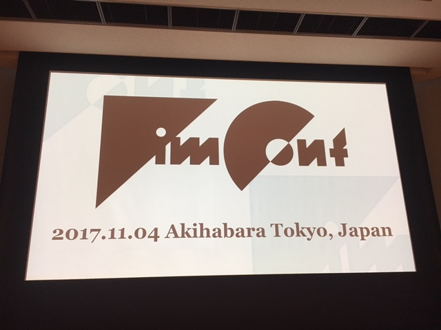
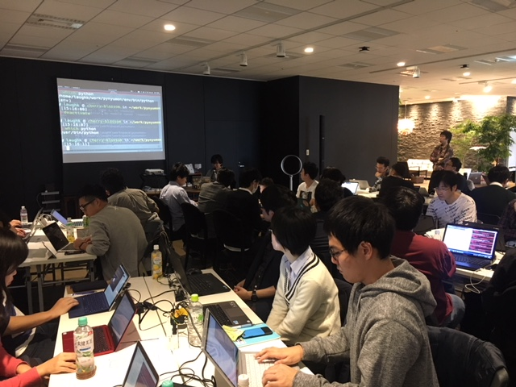

PyCharmからVimを開きたい
タイトルままです。 Twitterでもつぶやいた通り、IdeaVimってたまにバグりますよね！ そうゆう時、「PyCharmから、今開いているファイルをVimで開きたくなります。」
こんなこといってると、「Vimのキーバインドを使いたいなら最初からVim使えよ」と心の声がいってくるのですが、IdeaVimはIdeaVimで便利に使ってます。ということで、PyCharm(IntelliJ)からVimを開く方法を調べたのでメモ。
前提
- OS: macOS Sierra/High Sierra
- PyCharm: 2017.2.3
- IdeaVim: 0.48
やること
Preferences > Tools > External Tools から + を押して以下のように入力する
- Name: vim
- Program: /Applications/MacVim.app/Contents/MacOS/Vim (Vimのインストールしてる場所)
- Option: Open console のチェックを OFF
- Prameters: "-g" $FilePath$ "+$LineNumber$"
- Working directory: $ProjectFileDir$
設定が完了すると以下のようになります。

そして Find Action から vim と探してみると、今PyCharmで開いているファイルが、カーソルが当たってる行を指定して開けます。

やった！これでPyCharmからVimが開ける！
ハマったこと
GVimがアクティブになっていないとウィンドウが起動しない ことですね。
アクティブじゃない(GVimのプロセスが起動していない) と External tool 'vim' completed with exit code 0 と画面左下にメッセージが表示されるだけで終了してしまいました。
この時点で「GVimを常に起動しておけばいいや」という結論になったので深追いはしてませんが、GVimがアクティブじゃなくても起動してくれるようになると便利とは思いました。
まとめ
またひとつPyCharmからVimが使えるようになって便利
#VimConf2017 に参加しました

VimConf 2017 という、トレンド1位のイベントに行ってきました。さすがですね。
https://twitter.com/kashew_nuts/status/926643946431815680
まとめとかできないので、どんな感じだったのかはTwitterで実況してたやつを見てもらったほうがいいかなと思います。
from:kashew_nuts #VimConf2017 - Twitter Search
これ以上ないぐらいVimの濃い話、WiFiあり、各席に有線LAN・コンセントあり、同時翻訳あり、昼食・懇親会あり、無限コーヒーあり、などなどなどなど考えると個人スポンサーになっても全然ペイできるなという感じでした。
コーヒーもVimConf来たって感じにさせてくれました。atwareさんありがとうございます！
https://twitter.com/kashew_nuts/status/926611151500197888
お昼もおいしかった。
https://twitter.com/kashew_nuts/status/926651708557598720
特に印象に残ったこととかやることとか
@mattn_jp さん、 @kaoriya さん、 @k-takata さんの3人のLegendからVim(とWindows)の話を聞けたのは最高だった。
- vim-jpとかドキュメントから貢献するのいいよーという話の最中に、突然自分の名前がでてきて超ビビった。心拍数跳ね上がったと思う。その節は@mattn_jpさんや@k-takataさん含め、大変お世話になりました！
https://twitter.com/kashew_nuts/status/926671776431554560
offset しらなかった。べんり。 <is_foo>/s+3
set fileencodings=ucs-bom,iso-2022-jp,utf-8,euc-jp,cp932 をvimrcに追加した。
@t9mdさんのvim-mode-plusの話は、実践Vimを生きている感じがして相変わらず凄みがあった。
まとめっぽいもの
去年VimConfに出て vim-jp/vimdoc-jaにコントリビューションした話 - Qiita みたいなことやったからか、ありがたいことに話題にも上げてくれた人がしたし、今後も何かしらアウトプットしていけたらいいかなーと思います。来年もでれるようにしていこう。
みなさんお疲れ様でしたー。
発表スライドとか
- Vim, Me and Community @haya14busa
- The Past and Future of Vim-go @faith
- Creating Your Lovely Color Scheme @cocopon
- vmp: the most ambitious vim emulator @t9md
- Vim and Compatibility @senopen
- Neosnippet.vim + Deoppet.nvim in Vim conf 2017 @ShougoMatsu
- How ordinary Vim user contributed to Vim @dice_zu
- The new syntax highlighter for Vim @p_ck_
- You’ve been Super Viman. After this talk, you could say you are Super Viman 2 – Life with gina.vim @lambdalisue
Python入門者向けハンズオン #6 でTAしてきた #PyNyumon
Python入門者向けハンズオン #6 - connpass

前回のPyNyumon に引き続き2回目のTAで、 今回は講師の @laughk さんのフルアシスタント担当でした。
いろんなことが得られてよかったという思いと、全然だなーという至らなさと両方味わった感ありますが、なにはともあれ無事に終わってよかった。
以下、イベント前〜後に思ったこと、起きたことの雑多なメモです。
よかったこと
運営的なあれこれを体験できた
前回TAとして参加して1対1で説明したり、GitHubにある資料にPR送ったりとかはしたけど、 今回は講義中に1対N(参加者全員)という場面も経験できたり、資料も自分がPR送るだけでなく他の人のレビューとか、アシストとかもしてやることが広がった。
当日頑張ればというところだけだったのが、事前準備からアフターまでそれなりに考えてやる経験ができたのはよかった。
わりとイベントが好評だった
アンケートでも好評だったみたいです。イベント後の飲みでも「いい掛け合いだったよ」とか言ってもらえて頑張ったかいあったかなーと思いました。
Pythonの便利ポイントや使いみちとか理解してもらえた
仮想環境の便利さや使い分け、PyCharmの使い方、いつPythonを使うかみたいな標準やデファクト・スタンダードになっているものの利点を伝えたときに「なるほどー」となってもらえたのはよかった。
他にも pip install requests したとき依存ライブラリのインストール途中で止まるので依存がないバージョンのrequestsを入れてもらったりして、参加者がそこでストップしてしまわないようにできたかなー。
改善したかった・したいこと
講義資料とかのメンテのしやすさ向上
資料にPR1つ送るにしても、「それ昨日までずっと話題に上がってたのに」というのを毎回最初から説明するのは地味に骨が折れる。GitHubのリポジトリにissuesやPRのテンプレート機能とか、Contributing Guidelinesを用意しておくと少しはよくなるのかな。
読まない人は読まないけど、「ここ読んで」といえる準備をしておけば後が楽になるはずとは思った。
端的に説明するスキル
詳細に説明しようとすると140文字じゃ足りないものに対して「どうなんですか？」と聞かれるのはむずかしい。。。話の優先度とかもあるし、そもそも違う話だろっていうのもある…
前提を共有するの大事。スクレイピングをしたいとして、どのサイトのどの部分をどのように取得したいのかを知らずに回答することは難しい。(まあそれがちゃんと質問できる人は自力でできるはずなのでそもそも聞いてこないだろっていうのもあるかも)
講師・アシスタントのはじめて問題
実務でコード書いてたり、本書いたことあったりと力はあるはず(？)の教える側が、「運営」としてどうまわすかって結構難しいなーと。どこで切り上げていいかわからず待ってしまったり、ずるずる進めてしまったりという部分があったかなと。少なくとも、講師とアシスタントには最初からマイクが両方にあったほうがよかったな。
まとめ
運営側って大変だなーと思うところと、 何かできるようになっていくのは楽しいと思う気持ち、 教えようとすると実は自分が学習するなーという感じでした。
駄文を書き連ねてみましたが、 イベントに参加した人が一人でも多く次への一歩を踏み出せたなら何よりですかね。
講師の@laughkさん、TAのみなさん、運営、参加者の方々ありがとうございましたー。